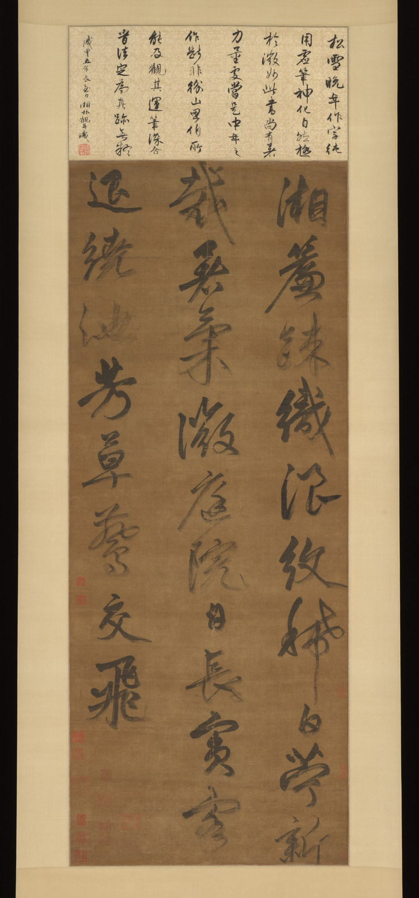
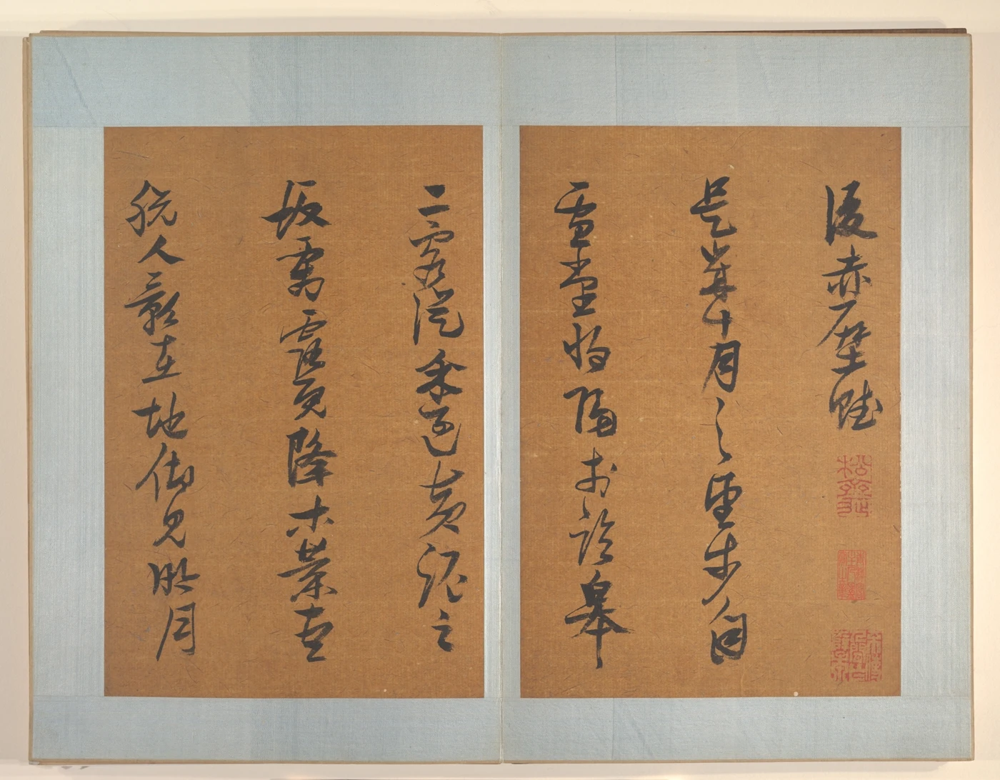
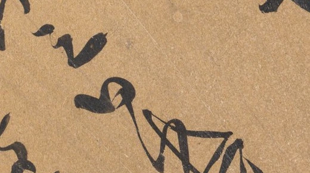
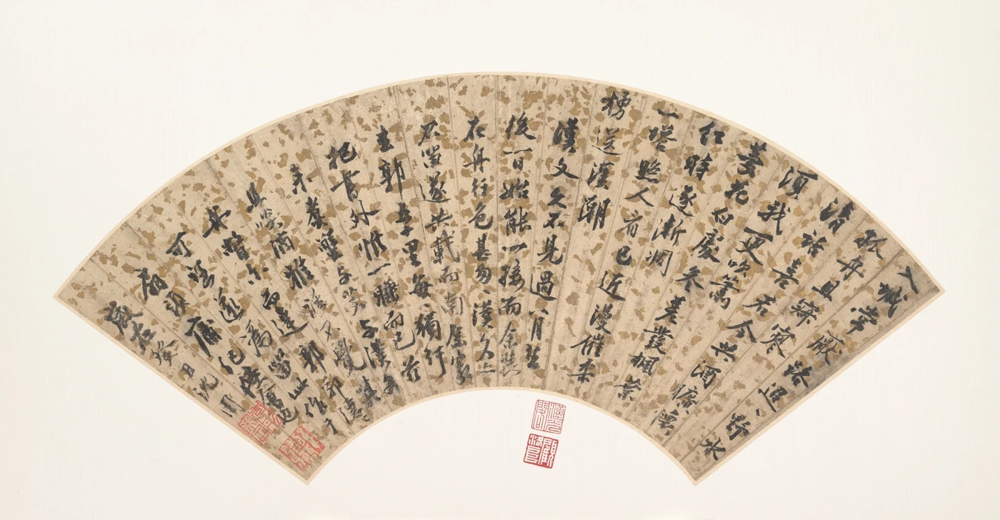

诗意 · 尺牍 · 笔墨向下，走入纸上的世界 ↓
纸上有山河，字里有故人
观字，
也观其人。
诗文、书信与扇页。
循着墨迹，走进书写发生的日常。
8 件作品
落笔之前，先静下来
你的这一笔。
试着慢行、疾走、停顿。
书写速度的变化，会留下不同的粗细。
在纸面上写一个字，或画一道墨痕。
可用鼠标、触控笔或手指。
墨间
第一展厅 / 笔锋
一笔放大
沿着同一道墨迹，看笔锋如何进入纸面，又如何离开。

先看展出册页，再沿着同一笔放大。
张瑞图 ·《赤壁赋》册页 · 17 世纪 大都会艺术博物馆 · 公共领域 ↗
第二展厅 / 墨色
一笔两面
拖动中线，在同一件作品的两处墨迹间往返。

浓墨枯笔王铎 · 行书临虞世南《贤兄帖》扇页 · 1637 年 大都会艺术博物馆 · 公共领域 ↗
第三展厅 / 章法
退一步看
打开「行气」，看字群如何沿扇面展开，在哪里停顿。

先看扇面全幅。
沈周 ·《赠汉文诗》扇页 · 1493 年 大都会艺术博物馆 · 公共领域 ↗